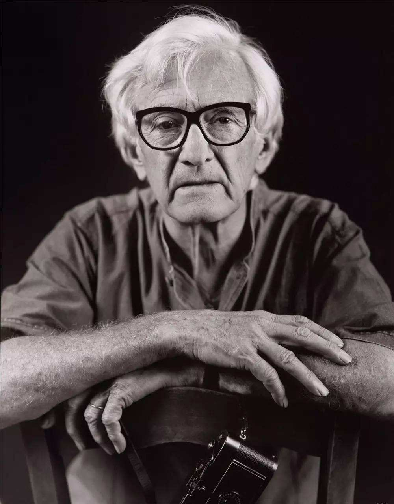
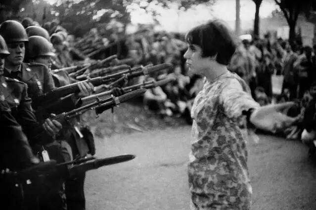
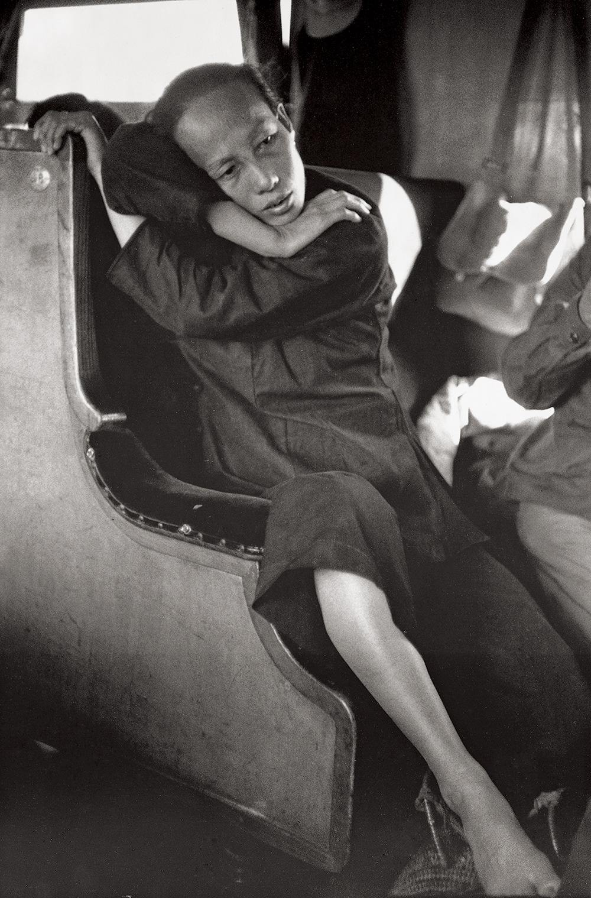
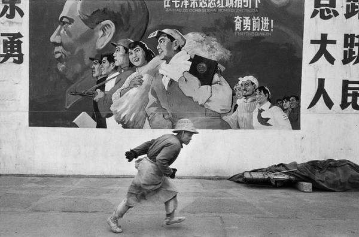
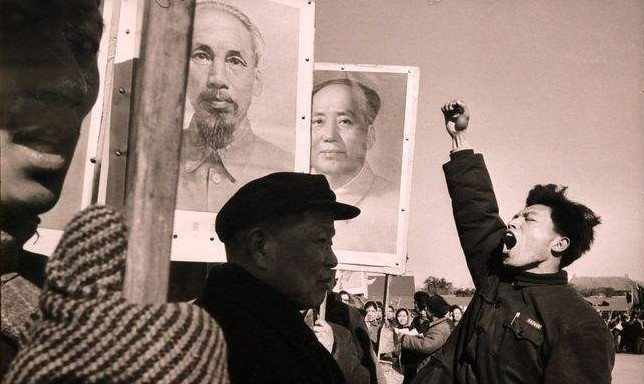
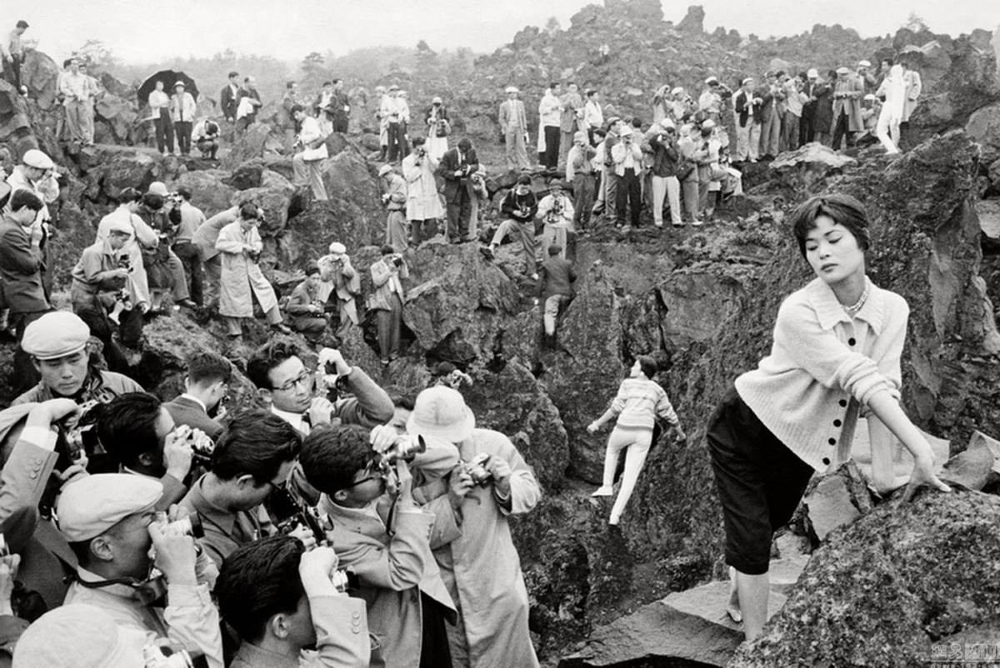
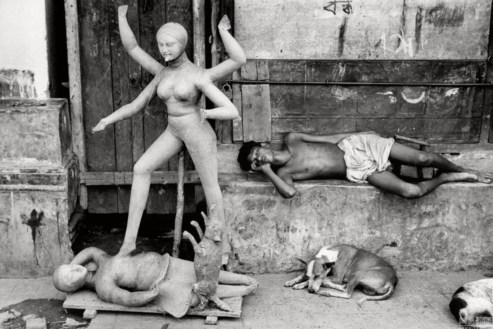
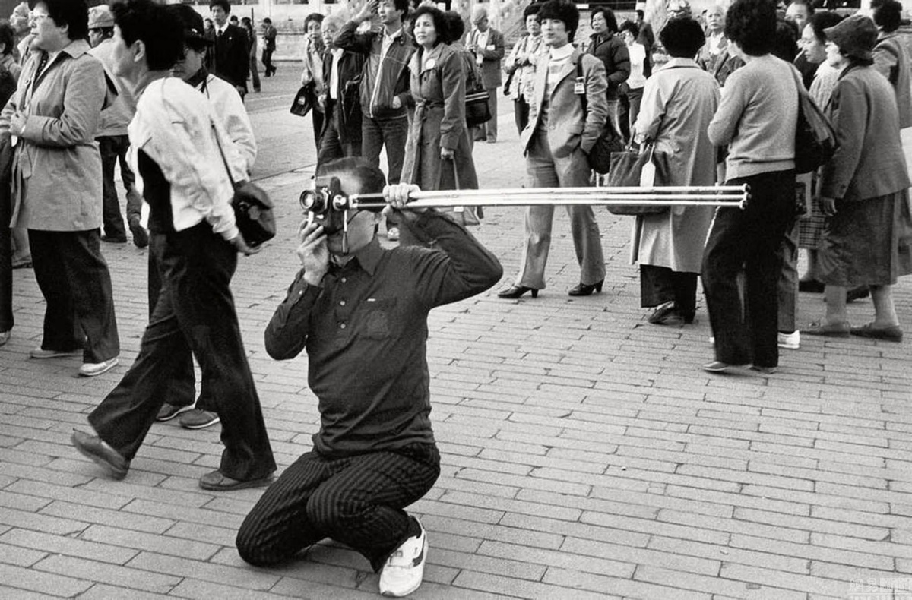
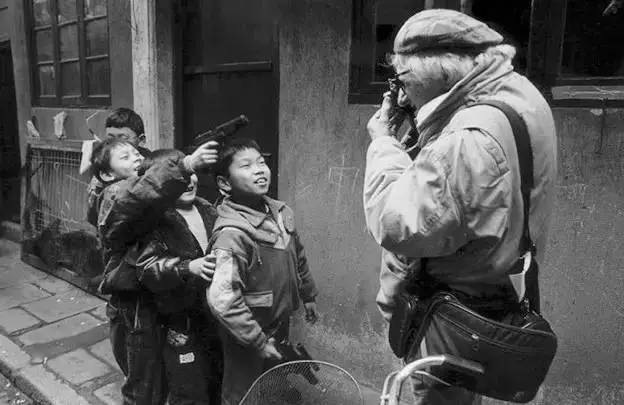

返回
人 像
风 光
建 筑
纪 实
静 物
马丁·帕尔 Martin Parr
森山大道 Daido Moriyama
马克·吕布 Marc Riboud
薇薇安·迈尔 Vivian Maier
詹姆斯·纳赫特韦 Nachtwey
南·戈尔丁 Nan Goldin
马克·吕布
马克·吕布（Marc Riboud），男，1923年6月24日出生于法国里昂，法国著名摄影师。
马克·吕布是新中国成立后首位获准进入中国拍摄的西方摄影师，从1957年起多次访问中国，留下很多经典照片。1957年发表了报道中的第一张图片，观察和记录了在中国发生的若干历史事件，以来自东方的延伸报道而著称。主要作品有：《The Three Banners of China》（中国三面红旗）、《Face of North Vietnam》、《Visions of China》。









Copyright : xdfzhanzge@126.com